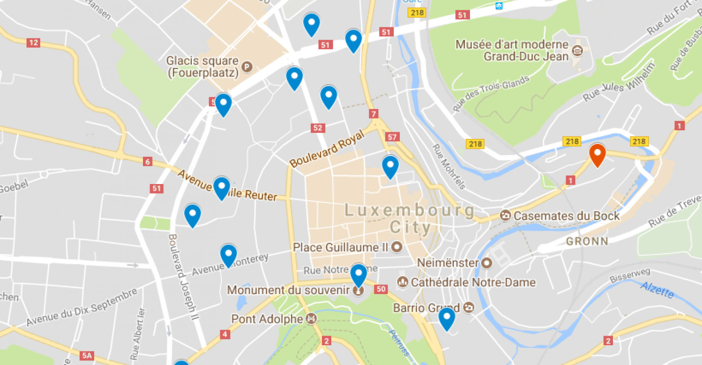

Internet Surveillance Helps Keep us Connected
Allowing ourselves to be tracked on the internet does have its merits. It allows us to become more and more connected with our online world, and bring the digital world and the real world closer together. By keeping tabs on various aspects of our lives, certain apps and tools are able to receive valuable data that vastly improve their functionality. For example, one can look at Google Maps. By approximating your location, Google Maps can locate where you are remotely, and even give you directions from your current position to a location you are attempting to get to in real time. This applies to other various apps and tools in different ways as well. For example, a website tracking your data (such as Facebook or Youtube) can analyze it to determine your interests and show you content that you are more likely to enjoy. Another example is applications like Grammarly, which analyze your typing habits and can provide you a detailed report on your habits and skills. |
 |